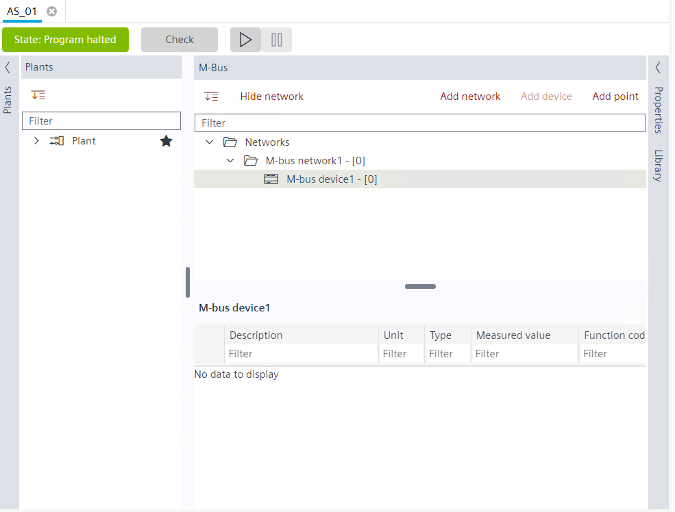
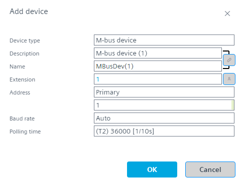

将设备添加到 M-bus 网络
您可以使用以下方法将 M-bus 设备添加到 M-bus 网络：

- You have a configured network and want to add a device to it.
- Go to Engineering > M-bus.
- In the M-bus area, select Networks.
- You can add a device to the selected network via two mechanisms:
- Right-click the network and select Add device.
- Click Add device button above the M-bus tree.
- The Add device dialog box displays.

- Select the type of device from the drop-down in the Device type field. There are two types of device types in M-bus:
M-bus level converter
M-bus device - Edit the description of the device in the Description field.
- Edit the name of the device in the Name field.
- Select Primary or Secondary address in the Address field.
- Select the baud rate from the drop-down list in the Baud rate field.
- Select the polling time from the drop-down list in the Polling time field.
- Click OK.
- You have added a device to the M-bus network.